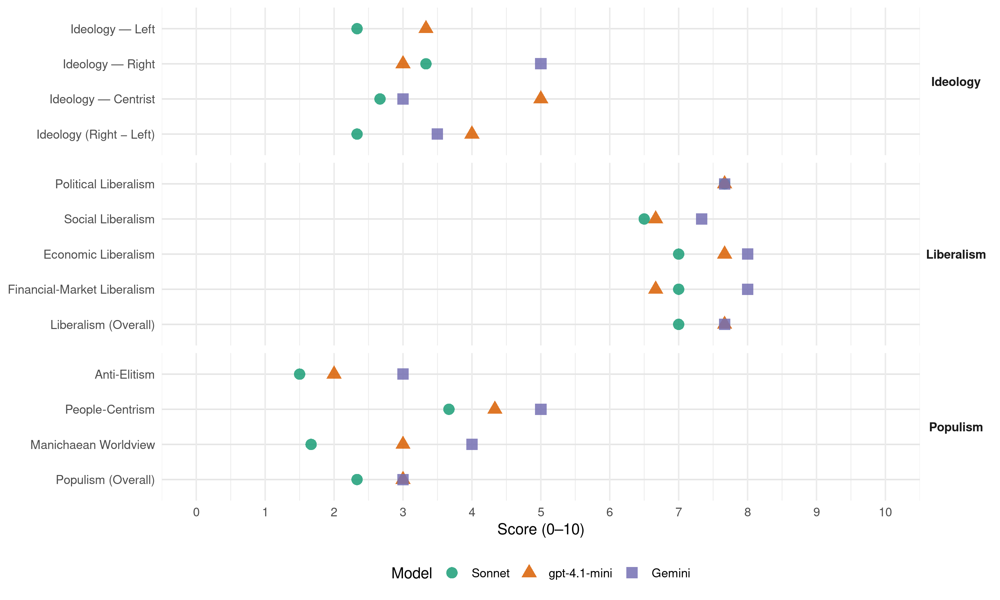

HDZ (Croatia, 2007)
manifesto_id 81711_200711
Get full text: This site shows derived annotations and short verbatim quotes only. The full manifesto text is © Manifesto Project / WZB — obtain it via manifesto-project.wzb.eu using the manifesto_id above.
Headline scores
| Dimension | Sonnet | gpt-4.1-mini | Gemini |
|---|---|---|---|
| Populism (Overall) | 2.3 | 3.0 | 3.0 |
| Anti-Elitism | 1.5 | 2.0 | 3.0 |
| People-Centrism | 3.7 | 4.3 | 5.0 |
| Manichaean Worldview | 1.7 | 3.0 | 4.0 |
| Ideology (Right − Left) | 2.3 | 4.0 | 3.5 |
| Liberalism (Overall) | 7.0 | 7.7 | 7.7 |
| Political Liberalism | 7.7 | 7.7 | 7.7 |
| Social Liberalism | 6.5 | 6.7 | 7.3 |
| Economic Liberalism | 7.0 | 7.7 | 8.0 |
| Financial-Market Liberalism | 7.0 | 6.7 | 8.0 |
Evidence per dimension
Economic Liberalism
Gemini · score 8.0 · verified · chunk 1
“stvaranje povoljnih uvjeta za poduzetništvo”
zadaća države i javnog sektora u gospodarstvu jasna – stvaranje povoljnih uvjeta za poduzetništvo, jačanje institucija
Gemini · score 8.0 · verified · chunk 2
“konkurentsku utakmicu na europskome tržištu”
hrvatskoga gospodarstva za konkurentsku utakmicu na europskome tržištu. Poduzetništvo je
Gemini · score 8.0 · verified · chunk 3
“ubrzat ćemo proces privatizacije svih poduzeća”
Nećemo prodavati zemljište u državnom vlasništvu Ubrzat ćemo proces privatizacije svih poduzeća u državnome vlasništvu koja posluju u konkurentnim
gpt-4.1-mini · score 8.0 · verified · chunk 1
“stvaranje povoljnih uvjeta za poduzetništvo, jačanje institucija”
…Zadaća je države i javnog sektora u gospodarstvu jasna – stvaranje povoljnih uvjeta za poduzetništvo, jačanje institucija i njihove učinkovitosti u praćenju potreba gospodarstva te osiguranje socijalne pravednosti i pravedne raspodjele društvenog bogatstva…
gpt-4.1-mini · score 8.0 · verified · chunk 2
“razvoj poduzetništva i poduzetničke klime”
Razvoj poduzetništva i poduzetničke klime ima posebnu važnost u razdoblju priprema za članstvo u Europskoj uniji jer znači jačanje sposobnosti hrvatskoga gospodarstva za konkurentsku utakmicu na europskome tržištu.
gpt-4.1-mini · score 7.0 · verified · chunk 3
“snižavanje troškova poslovanja i širenje obrazovnih aktivnosti”
Politika novoga razvojnog skoka znači jačanje konkurentnosti našega gospodarstva, njegove privlačnosti za ulaganja stranih i domaćih investitora, sposobnosti u stvaranju novih radnih mjesta, novih proizvoda i osvajanju novih tržišta. Ostvarit ćemo to usklađenom gospodarskom politikom usmjerenom na daljnje jačanje poduzetničkih uvjeta, jačanje institucija, snižavanje troškova poslovanja i širenje obrazovnih aktivnosti za veću konkurentnost
Sonnet · score 7.0 · verified · chunk 1
“Odbacujemo ideologije koje zazivaju povratak u socijalističko”
Odbacujemo zbog toga sve ideologije koje zazivaju povratak u socijalističko, administrativno usmjeravanje gospodarstva
Sonnet · score 7.0 · verified · chunk 2
“konkurentsku utakmicu na europskome tržištu”
znači jačanje sposobnosti hrvatskoga gospodarstva za konkurentsku utakmicu na europskome tržištu. Poduzetništvo je, uz znanje i obrazovanje, ključ našeg napretka.
Sonnet · score 7.0 · verified · chunk 3
“slobodnoj trgovini jačaju uvjete za ravnopravan”
novi CEFTA ugovor o slobodnoj trgovini jačaju uvjete za ravnopravan i učinkovit nastup hrvatskih tvrtki na regionalnim i drugim tržištima
Financial-Market Liberalism
Gemini · score 8.0 · verified · chunk 1
“poticati razvoj hrvatskoga tržišta kapitala”
Nastavit ćemo poticati razvoj hrvatskoga tržišta kapitala, među ostalim, i osnivanjem zatvorenih
Gemini · score 8.0 · verified · chunk 2
“zaštitu prava malih ulagača”
kompanija Osigurat ćemo zaštitu prava malih ulagača u skladu s europskim standardima
Gemini · score 8.0 · verified · chunk 3
“jačat ćemo razvoj tržišta kapitala”
u zemljišnim knjigama smanjit ćemo na nekoliko dana Jačat ćemo razvoj tržišta kapitala i mogućnosti financiranja poduzeća na tržištu kapitala
gpt-4.1-mini · score 7.0 · verified · chunk 1
“poticati razvoj hrvatskoga tržišta kapitala, među ostalim, i osnivanjem zatvorenih investicijskih fondova”
…Nastavit ćemo poticati razvoj hrvatskoga tržišta kapitala, među ostalim, i osnivanjem zatvorenih investicijskih fondova i nakon toga inicijalne javne ponude udjela tih fondova, kao i sekundarne javne ponude već listanih kompanija…
gpt-4.1-mini · score 7.0 · verified · chunk 2
“zaštitu prava malih ulagača u skladu s europskim standardima”
Osigurat ćemo zaštitu prava malih ulagača u skladu s europskim standardima Poduzetništvo Razvoj poduzetništva i poduzetničke klime ima posebnu važnost u razdoblju priprema za članstvo u Europskoj uniji.
gpt-4.1-mini · score 6.0 · verified · chunk 3
“osnažena je uloga tržišta kapitala u financiranju poduzeća”
Osnivanjem HANFA-e i inicijalnom ponudom INA-e i HT-a na Zagrebačkoj burzi osnažena je uloga tržišta kapitala u financiranju poduzeća. Kadrovski je osposobljena i počela je funkcionirati Agencija za poticanje izvoza i ulaganja, koja u ovome trenutku vodi 40-ak projekata
Sonnet · score 7.0 · verified · chunk 1
“razvoj hrvatskoga tržišta kapitala”
Nastavit ćemo poticati razvoj hrvatskoga tržišta kapitala, među ostalim, i osnivanjem zatvorenih investicijskih fondova
Sonnet · score 7.0 · verified · chunk 2
“zaštitu prava malih ulagača”
Osigurat ćemo zaštitu prava malih ulagača u skladu s europskim standardima
Sonnet · score 7.0 · verified · chunk 3
“nećemo uvoditi porez na kapitalnu dobit”
Jačat ćemo razvoj tržišta kapitala i mogućnosti financiranja poduzeća na tržištu kapitala, zbog čega nećemo uvoditi porez na kapitalnu dobit
Political Liberalism
Gemini · score 8.0 · verified · chunk 1
“promicanja demokracije i vladavine prava”
dosljedna, zrela i vjerodostojna politika mira i ravnopravnosti, suradnje, promicanja demokracije i vladavine prava, kao temeljnih vrijednosti
Gemini · score 8.0 · verified · chunk 2
“potpuno uspostavljanje vladavine prava”
Glavni je cilj potpuno uspostavljanje vladavine prava, jačanjem učinkovitosti pravosuđa
Gemini · score 7.0 · verified · chunk 3
“vratili povjerenje građana u politički život”
neposredan izbor župana, gradonačelnika i općinskih načelnika kako bismo vratili povjerenje građana u politički život, te utjecali na smanjenje korupcije
gpt-4.1-mini · score 8.0 · verified · chunk 1
“vladavine prava, ljudskih i manjinskih prava”
…Stalno raste javna svijest o poštovanju vladavine prava, ljudskih i manjinskih prava. Pojačana je svijest o odbacivanju svih oblika totalitarizma i ekstremizma…
gpt-4.1-mini · score 8.0 · verified · chunk 2
“Uvedena je mogućnost neposrednog izbora načelnika, gradonačelnika i župana”
Decentralizirano je izdavanje svih dozvola potrebnih za gradnju. Veliki iskorak u reformi javne uprave postignut je projektima e-Hrvatska. Uvedena je mogućnost neposrednog izbora načelnika, gradonačelnika i župana. Decentralizirano je izdavanje svih dozvola potrebnih za gradnju.
gpt-4.1-mini · score 7.0 · verified · chunk 3
“U proces donošenja Strateškog okvira za razvoj 2006. – 2013. i drugih strateških planova uključene su sve relevantne društvene skupine”
U proces donošenja Strateškog okvira za razvoj 2006. – 2013. i drugih strateških planova uključene su sve relevantne društvene skupine i na taj je način postavljena nova paradigma u odlučivanju o strateškim ciljevima društva
Sonnet · score 8.0 · verified · chunk 1
“promicanja demokracije i vladavine prava”
naša dosljedna, zrela i vjerodostojna politika mira i ravnopravnosti, suradnje, promicanja demokracije i vladavine prava
Sonnet · score 8.0 · verified · chunk 2
“jačanjem učinkovitosti pravosuđa”
Glavni je cilj potpuno uspostavljanje vladavine prava, jačanjem učinkovitosti pravosuđa, što dovodi do pravne sigurnosti građana, povoljnoga poslovnog okruženja
Sonnet · score 7.0 · verified · chunk 3
“neposredan izbor župana, gradonačelnika”
Osigurat ćemo neposredan izbor župana, gradonačelnika i općinskih načelnika kako bismo vratili povjerenje građana u politički život
Liberalism (Overall)
Gemini · score 8.0 · verified · chunk 1
“promicanja demokracije i vladavine prava”
dosljedna, zrela i vjerodostojna politika mira i ravnopravnosti, suradnje, promicanja demokracije i vladavine prava, kao temeljnih vrijednosti
Gemini · score 8.0 · verified · chunk 2
“potpuno uspostavljanje vladavine prava”
Glavni je cilj potpuno uspostavljanje vladavine prava, jačanjem učinkovitosti pravosuđa
Gemini · score 7.0 · verified · chunk 3
“ubrzat ćemo proces privatizacije svih poduzeća”
Nećemo prodavati zemljište u državnom vlasništvu Ubrzat ćemo proces privatizacije svih poduzeća u državnome vlasništvu koja posluju u konkurentnim
gpt-4.1-mini · score 8.0 · verified · chunk 1
“vladavine prava, ljudskih i manjinskih prava”
…Stalno raste javna svijest o poštovanju vladavine prava, ljudskih i manjinskih prava. Pojačana je svijest o odbacivanju svih oblika totalitarizma i ekstremizma…
gpt-4.1-mini · score 8.0 · verified · chunk 2
“razvoj poduzetništva i poduzetničke klime”
Razvoj poduzetništva i poduzetničke klime ima posebnu važnost u razdoblju priprema za članstvo u Europskoj uniji jer znači jačanje sposobnosti hrvatskoga gospodarstva za konkurentsku utakmicu na europskome tržištu.
gpt-4.1-mini · score 7.0 · verified · chunk 3
“U proces donošenja Strateškog okvira za razvoj 2006. – 2013. i drugih strateških planova uključene su sve relevantne društvene skupine”
U proces donošenja Strateškog okvira za razvoj 2006. – 2013. i drugih strateških planova uključene su sve relevantne društvene skupine i na taj je način postavljena nova paradigma u odlučivanju o strateškim ciljevima društva
Sonnet · score 7.0 · verified · chunk 1
“tržišnom gospodarstvu zadaća države i javnog sektora”
u suvremenome tržišnom gospodarstvu zadaća države i javnog sektora u gospodarstvu jasna – stvaranje povoljnih uvjeta za poduzetništvo
Sonnet · score 7.0 · verified · chunk 2
“potpuno uspostavljanje vladavine prava”
Glavni je cilj potpuno uspostavljanje vladavine prava, jačanjem učinkovitosti pravosuđa, što dovodi do pravne sigurnosti građana
Sonnet · score 7.0 · verified · chunk 3
“tržišta kapitala i mogućnosti financiranja poduzeća”
Jačat ćemo razvoj tržišta kapitala i mogućnosti financiranja poduzeća na tržištu kapitala, zbog čega nećemo uvoditi porez na kapitalnu dobit
Anti-Elitism
Gemini · score 3.0 · verified · chunk 1
“iz politikantskih i populističkih razloga”
kojima se u izborne svrhe, iz politikantskih i populističkih razloga, pokušava netočno oslikati
Gemini · score 3.0 · verified · chunk 3
“boriti protiv korupcije u javnoj upravi”
radnoga mjesta Odlučni smo beskompromisno se boriti protiv korupcije u javnoj upravi po načelu »Uključenost u korupciju
gpt-4.1-mini · score 2.0 · verified · chunk 1
“politike koja izbore shvaća samo kao priliku da se osvoji vlast”
…pred odabirom između odgovorne i zrele politike koja želi zajedno s građanima Hrvatske nastaviti voditi zemlju k novoj razini razvoja i osigurati svakomu hrvatskom čovjeku, svakoj obitelji i svakom hrvatskom kraju siguran život u uređenoj zemlji mira, rada i blagostanja i, s druge strane, politike koja izbore shvaća samo kao priliku da se osvoji vlast. Pred odabirom, dakle, između odgovorne i neodgovorne politike…
gpt-4.1-mini · score 2.0 · verified · chunk 2
“borba protiv korupcije”
Nastavit ćemo provedbu mjera za efikasnu borbu protiv korupcije, u svrhu osiguranja stabilnosti, demokracije i gospodarskog napretka za sve Nastavit ćemo jačati policiju, USKOK i druga tijela kaznenoga progona kako bismo se mogli učinkovito suprotstaviti sve složenijim oblicima gospodarskog, organiziranog i drugog kriminala
gpt-4.1-mini · score 2.0 · verified · chunk 3
“beskompromisno se boriti protiv korupcije”
Odlučni smo beskompromisno se boriti protiv korupcije u javnoj upravi po načelu »Uključenost u korupciju jednako otkaz« Otklonit ćemo preklapanja i nejasnoće u ovlastima institucija koje obavljaju javne poslove Nastavit ćemo proces prožimanja reforme javne uprave s provedbom projekata e-Hrvatska Podignut ćemo razinu stručnosti državne uprave i putem centra za podučavanje državnih službenika, dodatno osposobiti i podučiti 15.000 državnih službenika
Sonnet · score 2.0 · mixed · chunk 1
“populističkih razloga, pokušava netočno oslikati”
iz politikantskih i populističkih razloga, pokušava netočno oslikati stanje naše zemlje i našeg gospodarstva
Sonnet · score 1.0 · verified · chunk 2
“moćnim korporacijama, bilo pred pripadnicima”
osjećaj bespomoćnosti građana (bilo pred institucijama države, moćnim korporacijama, bilo pred pripadnicima društva koji primjenom sile i moći nastoje prigrabiti nepripadajuća im prava)
Sonnet · score 2.0 · verified · chunk 3
“beskompromisno se boriti protiv korupcije”
Odlučni smo beskompromisno se boriti protiv korupcije u javnoj upravi po načelu »Uključenost u korupciji jednako otkaz«
Ideology — Centrist
Gemini · score 3.0 · verified · chunk 3
“vratili povjerenje građana u politički život”
neposredan izbor župana, gradonačelnika i općinskih načelnika kako bismo vratili povjerenje građana u politički život, te utjecali na smanjenje korupcije
gpt-4.1-mini · score 6.0 · verified · chunk 1
“Politika koja će uvažavati interese građana i prepoznavati društvene prioritete”
…Za ostvarenje ovih ciljeva potrebna je odgovorna politika. Politika koja će uvažavati interese građana i prepoznavati društvene prioritete. Politika koja neće nasumičnim i ishitrenim idejama, na primjer o novim porezima, ugrožavati povjerenje i sigurnost građana…
gpt-4.1-mini · score 5.0 · verified · chunk 2
“svaki hrvatski građanin i poduzetnik”
Svaki hrvatski građanin i poduzetnik u poslovima koje obavlja s javnom upravom ima pravo na pravodobnu i nadasve kvalitetnu uslugu. Obaveza je javne uprave i njezinih institucija, i na državnoj i na lokalnoj razini, služiti svim građanima i poduzetnicima na transparentan i profesionalan način.
gpt-4.1-mini · score 4.0 · verified · chunk 3
“sve relevantne društvene skupine”
U proces donošenja Strateškog okvira za razvoj 2006. – 2013. i drugih strateških planova uključene su sve relevantne društvene skupine i na taj je način postavljena nova paradigma u odlučivanju o strateškim ciljevima društva
Sonnet · score 3.0 · verified · chunk 1
“čuti Hrvatsku. I poslušati je”
opet je najvažnije čuti Hrvatsku. I poslušati je. Prepoznati da se Hrvatska želi otvoriti
Sonnet · score 3.0 · verified · chunk 2
“svi u potpunosti ravnopravni”
Javna se uprava postupno pretvara u djelotvoran servis za građane i poduzetnike i pred njom su svi u potpunosti ravnopravni.
Sonnet · score 2.0 · verified · chunk 3
“zajedničkim interesima poslodavaca, zaposlenika i države”
Postići ćemo najširi društveni dogovor o zajedničkim interesima poslodavaca, zaposlenika i države radi postizanja ubrzanog razvoja
Ideology — Left
gpt-4.1-mini · score 3.0 · verified · chunk 1
“Odbacujemo zbog toga sve ideologije koje zazivaju povratak u socijalističko”
…Naša gospodarska politika prepoznaje da veća konkurentnost našega gospodarstva zahtijeva modernu ekonomsku politiku koja će povećavati sposobnost hrvatskoga gospodarstva u pronalaženju i iskorištavanju poslovnih prilika. Odbacujemo zbog toga sve ideologije koje zazivaju povratak u socijalističko, administrativno usmjeravanje gospodarstva i poduzetnika…
gpt-4.1-mini · score 4.0 · verified · chunk 2
“socijalnom partnerstvu kao temeljnim stupovima sigurnosti rada”
Inzistirat ćemo stoga na dosljednom poštivanju prava radnika i na socijalnom partnerstvu kao temeljnim stupovima sigurnosti rada, radnika i socijalno pravednoga društva.
gpt-4.1-mini · score 3.0 · verified · chunk 3
“socijalnu odgovornost privatnih poduzeća”
Promicat ćemo socijalnu odgovornost privatnih poduzeća jer je uspješno poduzeće dužno društvu vratiti i nešto više od poreza koje plaća Snažno ćemo poticati praksu mirnoga rješavanja sporova s ciljem da sud postane posljednja, a ne prva instanca u rješavanju sporova
Sonnet · score 3.0 · verified · chunk 1
“socijalne pravednosti i pravedne raspodjele”
osiguranje socijalne pravednosti i pravedne raspodjele društvenog bogatstva. Zadaća je poduzetničkog sektora
Sonnet · score 2.0 · verified · chunk 2
“Zaštitit ćemo socijalno osjetljive slojeve”
Zaštitit ćemo socijalno osjetljive slojeve i omogućiti im dostupnost svih razina zdravstvene zaštite
Sonnet · score 2.0 · verified · chunk 3
“socijalnu odgovornost privatnih poduzeća”
Promicat ćemo socijalnu odgovornost privatnih poduzeća jer je uspješno poduzeće dužno društvu vratiti i nešto više od poreza
Ideology (Right − Left)
Gemini · score 5.0 · verified · chunk 1
“oslonjeno o svoj narodni identitet”
kao suvremeno društvo oslonjeno o svoj narodni identitet uključen i spojen s europskim vrijednostima.
Gemini · score 2.0 · verified · chunk 3
“vratili povjerenje građana u politički život”
neposredan izbor župana, gradonačelnika i općinskih načelnika kako bismo vratili povjerenje građana u politički život, te utjecali na smanjenje korupcije
gpt-4.1-mini · score 5.0 · verified · chunk 1
“Odbacujemo zbog toga sve ideologije koje zazivaju povratak u socijalističko”
…Odbacujemo zbog toga sve ideologije koje zazivaju povratak u socijalističko, administrativno usmjeravanje gospodarstva i poduzetnika…
gpt-4.1-mini · score 4.0 · verified · chunk 2
“borba protiv korupcije”
Polazimo od načela nultoga stupnja tolerancije spram korupcije, jer korupcija sputava razvoj poduzetničke klime i političke kulture, rastače moral, kulturu i tradiciju kao temeljne društvene vrijednosti. Zato se korupciju mora stalno etički i politički vrednovati, stalno politički prosuđivati i protiv nje društveno odgovorno djelovati.
gpt-4.1-mini · score 3.0 · verified · chunk 3
“beskompromisno se boriti protiv korupcije”
Odlučni smo beskompromisno se boriti protiv korupcije u javnoj upravi po načelu »Uključenost u korupciju jednako otkaz« Otklonit ćemo preklapanja i nejasnoće u ovlastima institucija koje obavljaju javne poslove Nastavit ćemo proces prožimanja reforme javne uprave s provedbom projekata e-Hrvatska Podignut ćemo razinu stručnosti državne uprave i putem centra za podučavanje državnih službenika, dodatno osposobiti i podučiti 15.000 državnih službenika
Sonnet · score 3.0 · verified · chunk 1
“interese hrvatske države, hrvatskoga naroda”
uvijek je bila i ostat će stranka usmjerena na interese hrvatske države, hrvatskoga naroda i svakoga
Sonnet · score 2.0 · verified · chunk 2
“promicati hrvatski jezik i kulturu”
Nastavit ćemo promicati hrvatski jezik i kulturu te hrvatsku nacionalnu baštinu u svijetu
Sonnet · score 2.0 · verified · chunk 3
“beskompromisno se boriti protiv korupcije”
Odlučni smo beskompromisno se boriti protiv korupcije u javnoj upravi po načelu »Uključenost u korupciji jednako otkaz«
Ideology — Right
Gemini · score 5.0 · verified · chunk 1
“oslonjeno o svoj narodni identitet”
kao suvremeno društvo oslonjeno o svoj narodni identitet uključen i spojen s europskim vrijednostima.
gpt-4.1-mini · score 4.0 · verified · chunk 1
“želimo očuvati hodajući ususret svijetu”
…Radit ćemo i na prevladavanju strahova koje donose globalizacija i integracije, obnoviti mnoge vrijednosti, uključujući i snaženje našega nacionalnog i kulturnog identiteta koje moramo očuvati hodajući ususret svijetu…
gpt-4.1-mini · score 3.0 · verified · chunk 2
“rješavanje preostalih otvorenih pitanja”
Nastavit ćemo pružati snažnu potporu međunarodnoj zajednici u rješavanju preostalih otvorenih pitanja na jugoistoku Europe radi osiguranja trajnog mira i stabilnosti u našem jugoistočnom susjedstvu, jer je to dio naših nacionalnih interesa
gpt-4.1-mini · score 2.0 · verified · chunk 3
“zaštiti hrvatske manjine”
Nastavit ćemo diplomatski djelovati na pripremi i potpisivanju ugovora s drugim zemljama o zaštiti prava hrvatskih nacionalnih manjina te pratiti ostvarivanje manjinskih prava Hrvata u inozemstvu Pokrenut ćemo nove inicijative za sklapanje sporazuma o kulturnoj i prosvjetnoj suradnji s drugim zemljama radi očuvanja hrvatske kulture, jezika i tradicije u inozemstvu
Sonnet · score 4.0 · verified · chunk 1
“zaštitu tradicionalnih hrvatskih vrijednosti”
Nastavit ćemo štititi nacionalne interese i poticati zaštitu tradicionalnih hrvatskih vrijednosti
Sonnet · score 3.0 · verified · chunk 2
“promicati hrvatski jezik i kulturu”
Nastavit ćemo promicati hrvatski jezik i kulturu te hrvatsku nacionalnu baštinu u svijetu
Sonnet · score 3.0 · verified · chunk 3
“očuvanje hrvatskoga nacionalnog identiteta”
Naša je nacionalna baština temeljna odrednica našega nacionalnog bića koja je omogućila očuvanje hrvatskoga nacionalnog identiteta
Manichaean Worldview
Gemini · score 4.0 · verified · chunk 1
“između odgovorne i neodgovorne politike”
Pred odabirom, dakle, između odgovorne i neodgovorne politike. Pogrešan odabir donio bi
gpt-4.1-mini · score 3.0 · verified · chunk 1
“Oni koji ne žele zemlju čistih ruku i jasnih računa”
…Oni koji ne žele zemlju čistih ruku i jasnih računa. Mi pak želimo upravo to – Hrvatsku čistih ruku i jasnih računa. Zato smo se uhvatili u koštac i s korupcijom i organiziranim kriminalom…
gpt-4.1-mini · score 3.0 · verified · chunk 2
“borba protiv korupcije”
Polazimo od načela nultoga stupnja tolerancije spram korupcije, jer korupcija sputava razvoj poduzetničke klime i političke kulture, rastače moral, kulturu i tradiciju kao temeljne društvene vrijednosti. Zato se korupciju mora stalno etički i politički vrednovati, stalno politički prosuđivati i protiv nje društveno odgovorno djelovati.
Sonnet · score 3.0 · verified · chunk 1
“između odgovorne i neodgovorne politike”
Pred odabirom, dakle, između odgovorne i neodgovorne politike. Pogrešan odabir donio bi teške
Sonnet · score 1.0 · verified · chunk 2
“korupcija sputava razvoj poduzetničke klime”
korupcija sputava razvoj poduzetničke klime i političke kulture, rastače moral, kulturu i tradiciju kao temeljne društvene vrijednosti
Sonnet · score 1.0 · verified · chunk 3
“nepravedno bila oduzeta”
smo hrvatskim braniteljima vratili materijalna prava, koja su im nepravedno bila oduzeta, te sustavno razvijamo razne mjere
People-Centrism
Gemini · score 6.0 · verified · chunk 1
“težnje hrvatskog naroda i predvodila”
u svakom trenutku, pa i u najtežim vremenima, znala i prepoznala težnje hrvatskog naroda i predvodila u njihovu ostvarenju.
Gemini · score 4.0 · verified · chunk 3
“vratili povjerenje građana u politički život”
neposredan izbor župana, gradonačelnika i općinskih načelnika kako bismo vratili povjerenje građana u politički život, te utjecali na smanjenje korupcije
gpt-4.1-mini · score 7.0 · verified · chunk 1
“Hrvatski narod i hrvatski građani odluče o budućnosti Hrvatske”
…Ponovno je došao trenutak da hrvatski narod i hrvatski građani odluče o budućnosti Hrvatske. Ovo je trenutak goleme odgovornosti, iznimnih mogućnosti i povijesne prilike…
gpt-4.1-mini · score 3.0 · verified · chunk 2
“svaki hrvatski građanin i poduzetnik”
Svaki hrvatski građanin i poduzetnik u poslovima koje obavlja s javnom upravom ima pravo na pravodobnu i nadasve kvalitetnu uslugu. Obaveza je javne uprave i njezinih institucija, i na državnoj i na lokalnoj razini, služiti svim građanima i poduzetnicima na transparentan i profesionalan način.
gpt-4.1-mini · score 3.0 · verified · chunk 3
“povjerenje građana u politički život”
Osigurat ćemo neposredan izbor župana, gradonačelnika i općinskih načelnika kako bismo vratili povjerenje građana u politički život, te utjecali na smanjenje korupcije Provest ćemo edukaciju lokalnih dužnosnika i lokalnih službenika kako bismo znanjem jačali sposobnost jedinica lokalne samouprave i time pridonijeli ravnomjernom razvoju Hrvatske
Sonnet · score 5.0 · verified · chunk 1
“čuti što Hrvatska danas želi”
Potrebno je čuti što Hrvatska danas želi i gdje se vidi sutra. Potrebno je iskoristiti
Sonnet · score 3.0 · verified · chunk 2
“svaki hrvatski građanin ima pravo”
Voda je stoga najveći hrvatski prirodni potencijal te držimo da svaki hrvatski građanin ima pravo na zdravstveno ispravnu i kvalitetnu pitku vodu.
Sonnet · score 3.0 · verified · chunk 3
“na korist svih hrvatskih građana”
Odlučni smo dovršiti tranziciju i na korist svih hrvatskih građana osloboditi još neiskorištenu razvojnu rezervu
Populism (Overall)
Gemini · score 4.0 · verified · chunk 1
“između odgovorne i neodgovorne politike”
Pred odabirom, dakle, između odgovorne i neodgovorne politike. Pogrešan odabir donio bi
Gemini · score 2.0 · verified · chunk 3
“boriti protiv korupcije u javnoj upravi”
radnoga mjesta Odlučni smo beskompromisno se boriti protiv korupcije u javnoj upravi po načelu »Uključenost u korupciju
gpt-4.1-mini · score 4.0 · verified · chunk 1
“politike koja izbore shvaća samo kao priliku da se osvoji vlast”
…pred odabirom između odgovorne i zrele politike koja želi zajedno s građanima Hrvatske nastaviti voditi zemlju k novoj razini razvoja i osigurati svakomu hrvatskom čovjeku, svakoj obitelji i svakom hrvatskom kraju siguran život u uređenoj zemlji mira, rada i blagostanja i, s druge strane, politike koja izbore shvaća samo kao priliku da se osvoji vlast…
gpt-4.1-mini · score 3.0 · verified · chunk 2
“borba protiv korupcije”
Polazimo od načela nultoga stupnja tolerancije spram korupcije, jer korupcija sputava razvoj poduzetničke klime i političke kulture, rastače moral, kulturu i tradiciju kao temeljne društvene vrijednosti. Zato se korupciju mora stalno etički i politički vrednovati, stalno politički prosuđivati i protiv nje društveno odgovorno djelovati.
gpt-4.1-mini · score 2.0 · verified · chunk 3
“beskompromisno se boriti protiv korupcije”
Odlučni smo beskompromisno se boriti protiv korupcije u javnoj upravi po načelu »Uključenost u korupciju jednako otkaz« Otklonit ćemo preklapanja i nejasnoće u ovlastima institucija koje obavljaju javne poslove Nastavit ćemo proces prožimanja reforme javne uprave s provedbom projekata e-Hrvatska Podignut ćemo razinu stručnosti državne uprave i putem centra za podučavanje državnih službenika, dodatno osposobiti i podučiti 15.000 državnih službenika
Sonnet · score 3.0 · verified · chunk 1
“čuti glas Hrvatske”
možemo jasno osjetiti bilo hrvatskog naroda, čuti glas Hrvatske. U izborima koji su pred nama
Sonnet · score 2.0 · verified · chunk 2
“svaki hrvatski građanin ima pravo”
Voda je stoga najveći hrvatski prirodni potencijal te držimo da svaki hrvatski građanin ima pravo na zdravstveno ispravnu i kvalitetnu pitku vodu.
Sonnet · score 2.0 · verified · chunk 3
“beskompromisno se boriti protiv korupcije”
Odlučni smo beskompromisno se boriti protiv korupcije u javnoj upravi po načelu »Uključenost u korupciji jednako otkaz«
Social Liberalism